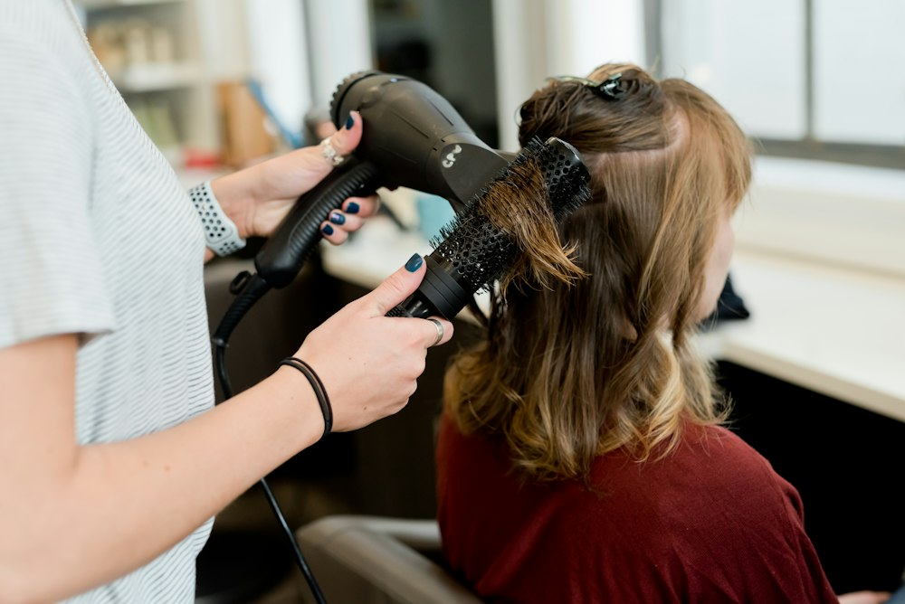

1
Conversa e avaliação
Perguntamos sobre alergias, produtos que você usa e o resultado esperado. Verificamos a região antes de escolher a técnica.
5 minutosA depilação remove os fios pela raiz e deixa a pele lisa. Escolhemos a cera ou a linha conforme a região e o seu tipo de pele.

A depilação é parte da rotina de cuidados de muitas pessoas. Em nossa clínica em Águas Claras, você encontra rosto e corpo atendidos com higiene rigorosa, materiais descartáveis e profissionais treinadas para respeitar a sensibilidade da pele.
Rosto: sobrancelha, buço, queixo, linha do maxilar e rosto completo, com cera ou linha.
Corpo: braços, antebraços, axilas, pernas, virilha, costas, peito e mãos. Para cada região, indicamos a cera mais adequada.
Antes do procedimento, perguntamos sobre alergias e sobre os produtos que você usa. Depois, indicamos como hidratar a região.
Consulte os valores e a duração de cada procedimento no agendamento.
Buço, queixo, sobrancelha e rosto completo com cera ou linha, com acabamento delicado.
Usamos cera conforme o tipo de fio e a sensibilidade da pele.
Pernas completas ou parciais, com resultado duradouro e pele macia.
Atendimento em sala individual, com materiais descartáveis e produto calmante.
Fazemos depilação nas costas e no peito.
Atendemos mãos e pés com cera.
O tempo depende da região. O procedimento segue seis etapas, da avaliação às orientações de casa.
Perguntamos sobre alergias, produtos que você usa e o resultado esperado. Verificamos a região antes de escolher a técnica.
5 minutos
Limpamos a região e aplicamos talco para tirar a umidade. Isso ajuda a cera a aderir aos fios.
5 minutos
Escolhemos cera quente, fria ou linha conforme o tipo de fio e a sensibilidade da pele.
10 minutosRetiramos os fios pela raiz no sentido do crescimento, com material descartável em cada atendimento.
15 minutos
Removemos resíduos de cera e aplicamos produto calmante na região.
5 minutosExplicamos o que evitar nas primeiras 24 horas e como hidratar a pele nos dias seguintes.
5 minutosResultados práticos da remoção dos fios pela raiz.
O fio sai pela raiz e o resultado dura de 3 a 5 semanas, conforme o ciclo de crescimento.
A pele é preparada antes da remoção. Isso reduz a chance de fios encravados em comparação com o corte na superfície.
Cada atendimento usa espátulas e luvas novas. A cera não é reutilizada entre clientes.
A linha remove os fios sem calor e sem arrastar a pele. Usamos quando há sensibilidade ou alergia à cera.
Quem depila com cera não precisa cortar os fios todos os dias.
Atendemos buço, axilas e virilha com cera específica, além de pernas, braços e costas.
Imagens ilustrativas dos materiais, das técnicas e da sala de atendimento.

Preços de referência em Águas Claras por região. O valor muda conforme a extensão da área e a técnica usada.
| Região | Técnica | Valor |
|---|---|---|
| Buço15 minutos | Cera ou linha | R$ 40 |
| Axilas20 minutos | Cera ou linha | R$ 50 |
| Braços completos40 minutos | Cera | R$ 80 |
| Rosto completo45 minutos | Cera e linha | R$ 100 |
| Virilha40 minutos | Cera ou linha | R$ 90 |
| Pernas completas50 minutos | Cera | R$ 110 |
| Costas50 minutos | Cera | R$ 140 |
O valor pode mudar conforme a região e o tipo de fio. Confirme no agendamento pelo WhatsApp.
Seguir essas dicas ajuda a evitar irritações e a prolongar o resultado.
Nos dias anteriores, evite esfoliar a região, usar cremes com ácidos e fazer depilação com lâmina. Hidrate a pele e venha sem maquiagem na área a ser tratada.
Nas primeiras 24 horas, evite banho quente, suor em excesso, piscina e exposição solar. Use hidratante calmante e protetor solar quando necessário.
Sim. Avaliamos a região e escolhemos a cera. Indicamos como hidratar a pele depois.
O resultado dura de 3 a 5 semanas, conforme o ciclo de crescimento dos fios e a região tratada.
Evite cremes com ácidos e esfoliação na região nos dias anteriores, não use lâmina e compareça com a pele limpa e hidratada.
Conheça o ambiente onde cada atendimento é feito com atenção aos detalhes.


Informe a região pelo WhatsApp. Confirmamos o horário disponível.
Agendar pelo WhatsApp